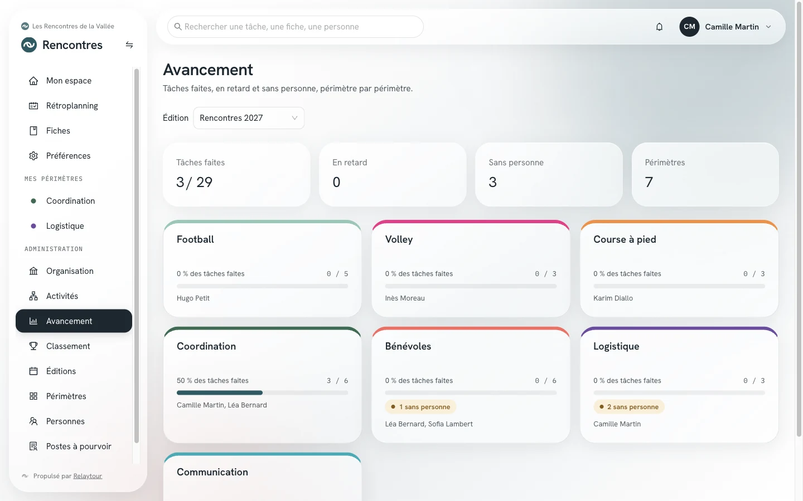
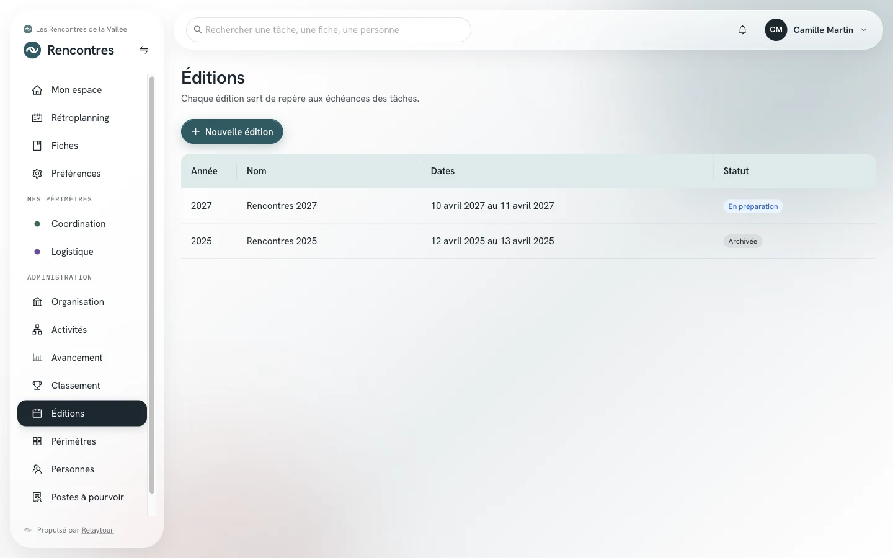
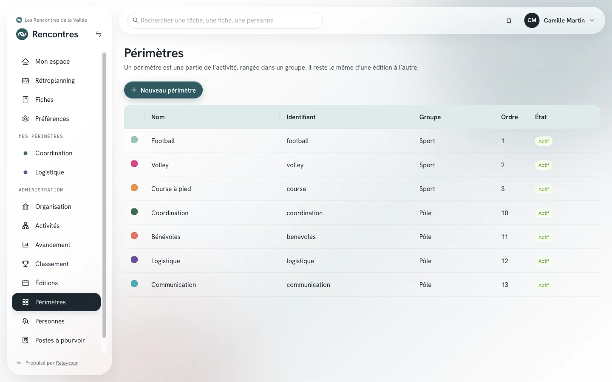
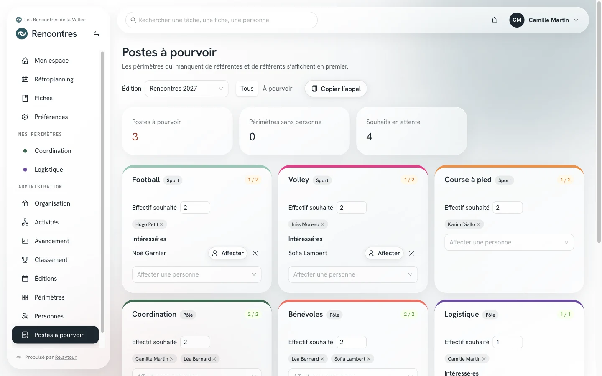
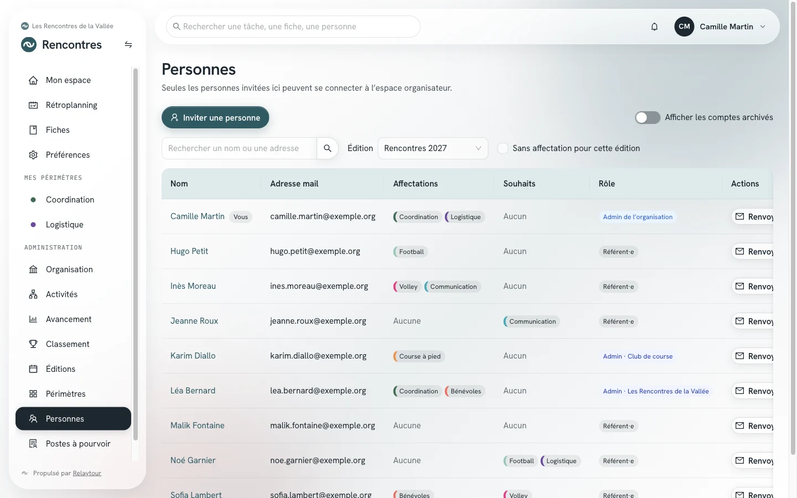
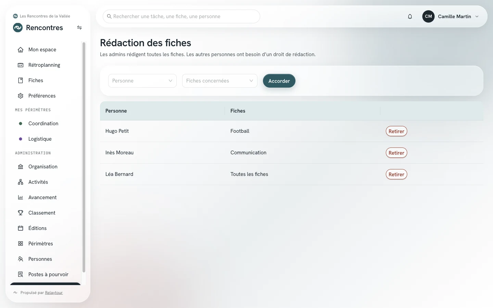
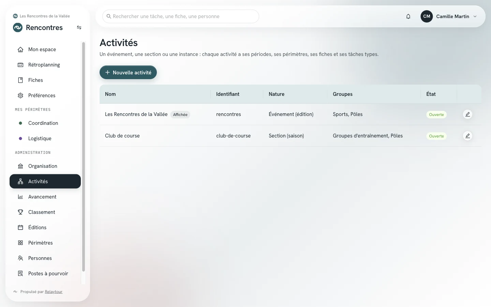

Vous administrez une activité : un événement, une section ou une instance. Vous ouvrez ses périodes, créez ses périmètres, constituez son équipe et suivez son avancement. Les autres activités de l'organisation restent invisibles pour vous.
Ce mode d'emploi ne décrit que le menu « Administration » de votre activité. Les écrans communs à toutes les personnes (Mon espace, Rétroplanning, Fiches, Préférences) sont décrits dans le mode d'emploi des référentes et référents.
Point de départ
Où se trouvent vos écrans
Le groupe Administration apparaît dans le menu de gauche quand vous administrez l'activité affichée. Toutes ses adresses commencent par l'identifiant de l'activité, par exemple /rencontres/admin/postes.
Le libellé des périodes suit la nature de l'activité : Éditions pour un événement, Saisons pour une section, Mandats pour une instance. Les exemples ci-dessous emploient « édition ».
Vos écrans
Ce que vous faites, écran par écran
Avancement
/<activité>/admin/avancement
L'écran affiche les tâches faites, en retard et sans personne, périmètre par périmètre. Quatre compteurs résument la période choisie : Tâches faites, En retard, Sans personne et Périmètres. Chaque carte mène à la page du périmètre.

Écran Avancement, sur l'organisation d'exemple livrée avec Relaytour. Les personnes et les périmètres sont fictifs.
Cet écran ne se modifie pas. Il sert au point d'avancement et repère les périmètres qui décrochent.
Éditions, saisons ou mandats
/<activité>/admin/editions
Une période sert de repère à toutes les échéances : une tâche type à J-120 se date depuis son premier jour. Le tableau liste l'année, le nom, les dates et le statut, soit En préparation, En cours ou Archivée.
Nouvelle éditionOuvrir la période suivante. Vous saisissez l'année, le nom, le premier jour et le dernier jour.
EnregistrerModifier le nom, les dates ou le statut d'une période. L'année ne change plus après la création.

Écran Éditions, sur l'organisation d'exemple livrée avec Relaytour.
Périmètres
/<activité>/admin/perimetres
Un périmètre est une partie de l'activité, rangée dans un groupe. Il reste le même d'une période à l'autre, ce qui permet à l'historique de le suivre. Le tableau affiche la couleur, le nom, l'identifiant, le groupe, l'ordre et l'état.
Nouveau périmètreSaisir le nom, l'identifiant, le groupe, la couleur et l'ordre d'affichage.
EnregistrerModifier un périmètre, ou l'archiver. Un périmètre archivé disparaît des listes et son historique reste consultable.
L'identifiant ne change plus après la création : il relie les fiches, les tâches types et l'historique.

Écran Périmètres, sur l'organisation d'exemple.
Postes à pourvoir
/<activité>/admin/postes
C'est l'écran de constitution de l'équipe. Les périmètres qui manquent de référentes et de référents s'affichent en premier. Trois compteurs résument la situation : Postes à pourvoir, Périmètres sans personne et Souhaits en attente.
Effectif souhaitéFixer le nombre de personnes attendues sur un périmètre. La différence avec les affectations donne les postes à pourvoir.
AffecterAffecter une personne qui a exprimé un souhait, ou choisir n'importe quel membre de l'organisation dans la liste.
RetirerRetirer une affectation, ou retirer un souhait devenu sans objet.
Copier l'appelCopier un appel aux référentes et référents, à coller dans un mail ou un message.
Sur une période archivée, l'effectif et le retrait des souhaits sont désactivés.

Écran Postes à pourvoir, sur l'organisation d'exemple. Les personnes sont fictives.
Personnes
/<activité>/admin/personnes
Seules les personnes invitées ici peuvent se connecter à l'espace organisateur. Le tableau donne le nom, l'adresse mail, les affectations, les souhaits et le rôle. Un filtre isole les personnes sans affectation pour la période choisie.
Inviter une personneSaisir le nom et l'adresse, et noter ses périmètres souhaités. La personne reçoit un mail avec son lien de connexion et le mode d'emploi de son rôle.
Renvoyer l'invitationRelancer une personne de votre équipe qui ne s'est pas encore connectée.
Vous lisez l'annuaire de l'organisation, dont vous avez besoin pour constituer votre équipe. Les affectations et les souhaits que vous voyez sont ceux de vos activités seulement. Le nom d'un compte existant se modifie par un admin de l'organisation.

Écran Personnes, sur l'organisation d'exemple. Les personnes et les adresses sont fictives.
Rédaction des fiches
/<activité>/admin/redaction
Les admins rédigent toutes les fiches de leur activité. Les autres personnes ont besoin d'un droit de rédaction, accordé périmètre par périmètre.
AccorderChoisir une personne et un périmètre de votre activité.
RetirerRetirer un droit devenu inutile, après confirmation.
Le droit portant sur toutes les fiches, communes comprises, appartient aux admins de l'organisation.

Écran Rédaction des fiches, sur l'organisation d'exemple.
Historique d'une fiche
/<activité>/fiches/<fiche>
Sur chaque fiche de votre activité, un bouton Historique ouvre la liste des versions. Vous y consultez une version passée et vous la restaurez si une modification doit être annulée.
Les référentes et référents qui ont un droit de rédaction modifient la fiche, mais ne voient pas cet historique.
Activités
/<activité>/admin/activites
Le tableau liste les activités que vous voyez. Le bouton de modification n'apparaît que sur celles que vous administrez.
EnregistrerRégler le nom, le sigle, l'ordre et la nature de votre activité.
Ajouter un groupeDéclarer les groupes de périmètres : sports et pôles, équipes et pôles, commissions et bureau.
Identité propreDonner à l'activité son contact, sa page d'équipe, son logo et ses deux couleurs. Un champ vide reprend la valeur de l'organisation.
La création et l'archivage d'une activité appartiennent aux admins de l'organisation.

Écran Activités, sur l'organisation d'exemple.
Bon à savoir
Les limites de votre rôle
Une activité à la fois
Une activité que vous n'administrez pas et où vous n'êtes pas affecté·e n'existe pas pour vous : ni dans le sélecteur, ni dans les listes, ni dans la recherche.
Vous ne nommez pas d'admin
La nomination des admins d'activité et des admins de l'organisation appartient aux admins de l'organisation. Vous invitez des membres, pas des admins.
Les comptes ne vous appartiennent pas
Le nom, l'archivage et la restauration d'un compte relèvent des admins de l'organisation. Un compte est commun à toute l'organisation.
L'identité de l'organisation vous échappe
Le nom, le logo, le thème et le téléchargement du contenu de l'organisation se règlent sur la page Organisation, réservée aux admins de l'organisation.
Si l'organisation passe en lecture seule
Un bandeau s'affiche en haut de l'espace : vous pouvez consulter et exporter les données, pas les modifier. Les boutons restent visibles, et toute tentative d'enregistrement renvoie ce message.
Les autres rôles
Les autres modes d'emploi
Votre équipe utilise le mode d'emploi des référentes et référents. Le bureau de l'organisation utilise celui de l'admin de l'organisation.